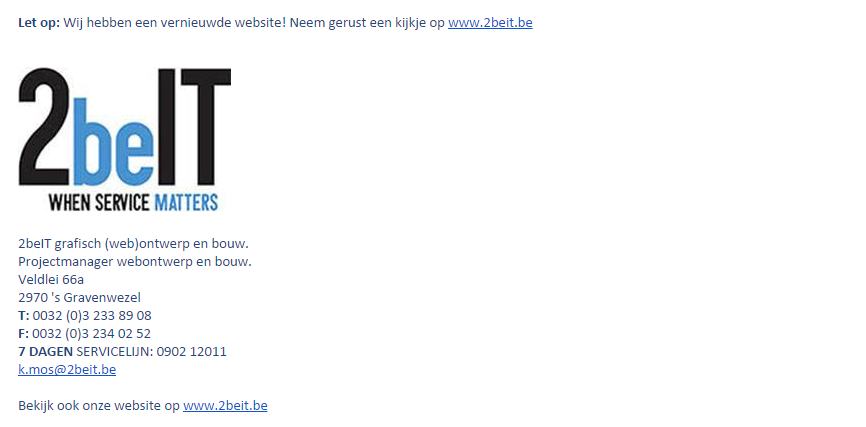

Huisstijl
GIP-taak 16
GIP-Opdracht : Huisstijl

Zoals u hierboven kan zien bevat het logo van mijn stagebedrijf blauw, zwart, geel en wit. Dit zijn de drie kleuren die vooral gebruikt worden in het bedrijf. Ze gebruiken deze op hun site, op hun folders, op hun brieven en hun aankoop/ verkoopdocumenten. Ze werken met heel hun bedrijf rond deze kleuren. Op mijn stagebedrijf moest ik ook elke keer wanneer een laptop/ desktop gemaakt was en helemaal in orde was een stikker kleven met het logo van het bedrijf en het telefoon nummer er op. Dit was dan om mensen te lokken om hun service lijn te gebruiken. Ik moest ook altijd een foldertje tussen de laptops steken, dit was ook weer om reclame te maken. Voor de rest hebben ze geen andere kleuren of specifieke onderdelen aan hun huisstijl. Eén van de diensten die ze aanbieden met hun bedrijf is huisstijlen voor andere bedrijven maken. Hieronder vindt u ook nog hun informatieblok dat automatisch wordt mee verzonden bij elke correspondentie met hun clienteel.


Share this post
Twitter
Google+
Facebook
Reddit
LinkedIn
StumbleUpon
Email